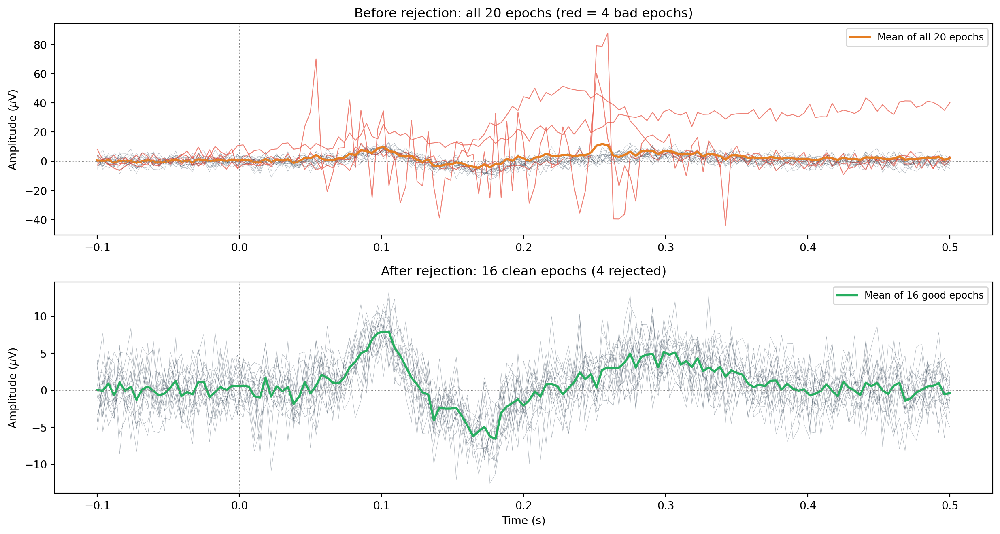

import mne
# Load and preprocess data
raw = mne.io.read_raw_edf("recording.edf", preload=True)
raw.filter(l_freq=0.5, h_freq=45.0)
# Open the interactive browser
raw.plot(
n_channels=20, # show 20 channels at a time
scalings="auto", # automatic scaling per channel type
duration=10.0, # show 10 seconds per screen
block=True # pause execution until window is closed
)Visual inspection and manual rejection
artifacts
quality-control
When manual rejection is appropriate, how to use MNE’s interactive data browsers for raw data and epochs, marking bad segments with annotations, marking bad epochs, and guidelines for deciding what to reject.
Why this topic matters
Automated methods for artifact removal (ICA, threshold-based rejection) are powerful, but they are not infallible. Sometimes they miss subtle artifacts, and sometimes they flag clean data as bad. Visual inspection is the quality-control step that catches what automation misses. Even in a fully automated pipeline, you should look at your data at some point to check that nothing has gone wrong.
Manual rejection is also the most appropriate strategy when you have a small number of clearly contaminated segments. If three out of two hundred epochs contain a large muscle burst, it is faster and more reliable to mark those three epochs as bad by eye than to tune an automated algorithm to catch them.
When manual rejection is the right tool
Manual rejection works best in these situations:
- Small to moderate datasets: if you have a handful of participants with a few hundred epochs each, visual inspection is practical. If you have 200 participants, you need automation.
- Unusual artifacts: movement artifacts, electrode pops, and equipment glitches often have idiosyncratic shapes that automated methods do not recognise. Your eyes can spot them instantly.
- Quality control after automated cleaning: even when you use ICA or threshold rejection, you should visually inspect the results to verify that the cleaning worked. Did ICA remove all the blinks? Did the threshold reject the right epochs?
- Pilot data or method development: when you are still figuring out what your data look like and what preprocessing steps are needed, manual inspection is invaluable.
Browsing raw data with raw.plot()
MNE-Python provides an interactive browser for continuous (raw) EEG data. You can scroll through the recording, zoom in and out, and mark bad segments.
In the browser window, you can:
- Scroll through time using the left/right arrow keys or the scrollbar at the bottom.
- Mark bad segments: click and drag to highlight a time region. This creates an annotation of type “BAD_” that tells MNE to exclude this segment from later analyses (epoching, ICA fitting, etc.).
- Mark bad channels: click on a channel name to toggle it as “bad”. Bad channels turn grey and are excluded from analyses.
- Zoom: use the + and - keys (or the up/down arrows) to change the vertical scale.
The annotations you create are stored in raw.annotations and can be saved with the data.
Browsing epochs with epochs.plot()
After epoching, you can inspect individual epochs using the epoch browser:
# Create epochs
events = mne.find_events(raw)
epochs = mne.Epochs(raw, events, tmin=-0.2, tmax=0.5, preload=True)
# Open the epoch browser
epochs.plot(
n_channels=20, # channels to display
n_epochs=5, # epochs per screen
scalings="auto", # automatic scaling
block=True
)In the epoch browser:
- Click on an epoch to toggle it as bad (it will turn dark/greyed out). Bad epochs are excluded when you call
epochs.drop_bad()or when you compute averages. - Scroll through epochs using the arrow keys.
- Click on a channel name to mark it as bad across all epochs.
Marking bad segments with annotations
You can also create annotations programmatically. This is useful when you have a list of known bad time periods (e.g., from a log file or from a previous inspection pass):
import mne
# Mark a segment from 10 s to 12 s as bad
onset = 10.0 # start time in seconds
duration = 2.0 # duration in seconds
description = "BAD_movement" # any string starting with "BAD_"
raw.annotations.append(onset, duration, description)
# Mark multiple segments at once
onsets = [25.0, 48.5, 102.3]
durations = [1.5, 3.0, 0.8]
descriptions = ["BAD_muscle", "BAD_blink", "BAD_electrode_pop"]
for o, d, desc in zip(onsets, durations, descriptions):
raw.annotations.append(o, d, desc)Any annotation whose description starts with “BAD_” (or just “BAD”) is treated as a bad segment by MNE. When you create epochs, any epoch that overlaps with a BAD annotation is automatically excluded.
Guidelines for what to reject
Knowing what to reject takes practice. Here are some practical guidelines:
Reject these
- Eye blinks that ICA did not fully remove: look for residual frontal deflections that are clearly non-neural. If you ran ICA and some blinks are still visible, reject the affected epochs.
- Large muscle bursts: if a segment shows high-frequency, large-amplitude noise that obscures the brain signal, reject it. Small amounts of muscle activity in temporal channels may be tolerable depending on your analysis.
- Electrode pops and jumps: sudden, sharp spikes in a single channel that look nothing like brain activity. These are often caused by momentary loss of electrode contact.
- Movement artifacts: large, slow drifts that shift the baseline of multiple channels simultaneously. These often correspond to the participant moving their head.
- Amplifier saturation: if a channel hits the maximum or minimum voltage and “flat-lines” at the rail, that segment is unusable.
Think carefully before rejecting
- Mild, widespread noise: if all channels are slightly noisier during a period but the signal is still visible, consider keeping the data and relying on averaging to reduce the noise.
- Single bad channel: if only one channel is contaminated, it may be better to interpolate that channel rather than reject the entire epoch. You lose less data that way.
- Ambiguous segments: if you are not sure whether something is artifact or an unusual brain response, keep it. Over-rejection can bias your results by systematically removing trials with large brain responses.
How much rejection is too much?
There is no fixed rule, but losing more than 30% of your epochs is a warning sign. If you are rejecting that many trials, something is wrong upstream: the data quality may be poor, the recording setup may need adjustment, or your rejection criteria may be too strict. A well-recorded dataset with good preprocessing should need less than 10-15% manual rejection.
Working example
The code below creates simulated epochs with different artifact types, demonstrates how to mark some as bad, and shows the rejection workflow.
import numpy as np
import matplotlib.pyplot as plt
rng = np.random.default_rng(42)
# ── Simulation parameters ─────────────────────────────────────
sfreq = 256
n_epochs = 20
epoch_duration = 0.6 # seconds (like a -0.1 to 0.5 s epoch)
n_samples = int(epoch_duration * sfreq)
times = np.linspace(-0.1, 0.5, n_samples)
# ── Generate epochs ───────────────────────────────────────────
epochs_data = np.zeros((n_epochs, n_samples))
for i in range(n_epochs):
# Brain signal: ERP-like component (P100 + N170 + P300)
erp = (
8e-6 * np.exp(-((times - 0.10) ** 2) / (2 * 0.015 ** 2)) # P100
- 6e-6 * np.exp(-((times - 0.17) ** 2) / (2 * 0.020 ** 2)) # N170
+ 5e-6 * np.exp(-((times - 0.30) ** 2) / (2 * 0.040 ** 2)) # P300
)
noise = 3e-6 * rng.standard_normal(n_samples)
epochs_data[i] = erp + noise
# ── Inject artifacts into some epochs ─────────────────────────
bad_epochs = []
# Epoch 3: eye blink artifact
blink_start = int(0.15 * sfreq) + int(0.1 * sfreq) # offset for -0.1 start
blink_width = int(0.15 * sfreq)
t_bl = np.arange(blink_width) / sfreq
epochs_data[3, blink_start:blink_start + blink_width] += (
50e-6 * np.sin(np.pi * t_bl / (blink_width / sfreq))
)
bad_epochs.append(3)
# Epoch 8: muscle burst
emg_start = int(0.05 * sfreq) + int(0.1 * sfreq)
emg_length = int(0.3 * sfreq)
emg_burst = 20e-6 * rng.standard_normal(emg_length)
for freq in np.arange(30, 70, 10):
emg_burst += 8e-6 * np.sin(
2 * np.pi * freq * np.arange(emg_length) / sfreq
)
epochs_data[8, emg_start:emg_start + emg_length] += emg_burst
bad_epochs.append(8)
# Epoch 14: electrode pop (single sharp spike)
pop_idx = int(0.25 * sfreq) + int(0.1 * sfreq)
epochs_data[14, pop_idx:pop_idx + 3] += 80e-6
epochs_data[14, pop_idx + 3:pop_idx + 6] -= 40e-6
bad_epochs.append(14)
# Epoch 17: movement drift
drift = np.linspace(0, 40e-6, n_samples)
epochs_data[17] += drift
bad_epochs.append(17)
# ── Identify good epochs ──────────────────────────────────────
good_epochs = [i for i in range(n_epochs) if i not in bad_epochs]
scale = 1e6 # convert to microvolts
# ── Visualisation ─────────────────────────────────────────────
fig, axes = plt.subplots(2, 1, figsize=(13, 7))
# Panel 1: all epochs overlaid, bad ones highlighted
ax = axes[0]
for i in range(n_epochs):
if i in bad_epochs:
ax.plot(times, epochs_data[i] * scale, color="#e74c3c",
linewidth=0.8, alpha=0.7)
else:
ax.plot(times, epochs_data[i] * scale, color="#2c3e50",
linewidth=0.3, alpha=0.4)
# Plot mean of all epochs (including bad)
mean_all = epochs_data.mean(axis=0) * scale
ax.plot(times, mean_all, color="#e67e22", linewidth=2.0,
label=f"Mean of all {n_epochs} epochs")
ax.axhline(0, color="grey", linewidth=0.5, linestyle=":")
ax.axvline(0, color="grey", linewidth=0.5, linestyle=":")
ax.set_ylabel(r"Amplitude ($\mu$V)")
ax.set_title(f"Before rejection: all {n_epochs} epochs "
f"(red = {len(bad_epochs)} bad epochs)")
ax.legend(fontsize=9)
# Panel 2: only good epochs, with clean average
ax = axes[1]
good_data = epochs_data[good_epochs]
for i in range(len(good_epochs)):
ax.plot(times, good_data[i] * scale, color="#2c3e50",
linewidth=0.3, alpha=0.4)
mean_good = good_data.mean(axis=0) * scale
ax.plot(times, mean_good, color="#27ae60", linewidth=2.0,
label=f"Mean of {len(good_epochs)} good epochs")
ax.axhline(0, color="grey", linewidth=0.5, linestyle=":")
ax.axvline(0, color="grey", linewidth=0.5, linestyle=":")
ax.set_xlabel("Time (s)")
ax.set_ylabel(r"Amplitude ($\mu$V)")
ax.set_title(f"After rejection: {len(good_epochs)} clean epochs "
f"({len(bad_epochs)} rejected)")
ax.legend(fontsize=9)
plt.tight_layout()
plt.show()
print(f"Rejected epochs: {bad_epochs}")
print(f"Rejection rate: {len(bad_epochs)}/{n_epochs} "
f"= {100 * len(bad_epochs) / n_epochs:.0f}%")
print(f"Surviving epochs: {len(good_epochs)}/{n_epochs}")
Rejected epochs: [3, 8, 14, 17]
Rejection rate: 4/20 = 20%
Surviving epochs: 16/20In the top panel, you can see the four contaminated epochs (red traces) distorting the average (orange line). The blink artifact in epoch 3 and the electrode pop in epoch 14 pull the average upward, making the ERP components harder to identify. In the bottom panel, after removing the four bad epochs, the average (green line) shows cleaner P100, N170, and P300 components. The rejection rate here is 20%, which is within acceptable limits for a small dataset.
Key takeaways
- Visual inspection is an important quality-control step even when you use automated artifact removal methods. It catches unusual artifacts that algorithms miss and verifies that automated cleaning worked correctly.
- Use
raw.plot()to browse continuous data and mark bad segments with BAD annotations. Useepochs.plot()to browse individual epochs and mark bad ones by clicking. - Any annotation starting with “BAD_” tells MNE to exclude that segment from further analyses (epoching, ICA fitting, averaging).
- Reject epochs with clear artifacts (blinks, muscle bursts, electrode pops, movement) but be cautious about over-rejection. If you are losing more than 30% of your data, reconsider your preprocessing approach.
- When only a single channel is bad, consider interpolation rather than rejecting the entire epoch.
- Manual rejection is most practical for small to moderate datasets. For large studies, use it as a quality-control check on top of automated methods.